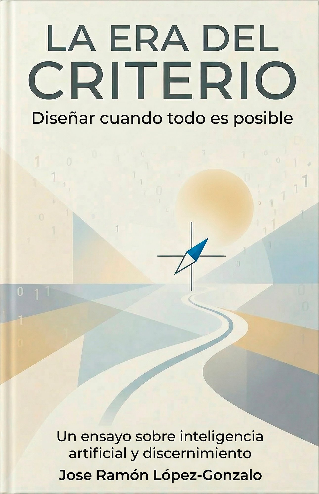

Ensayo crítico · Diseño industrial · 2026
Un diagnóstico del diseño en la era de la abundancia diseñada. Y una hoja de ruta para lo que merece existir.
Del texto
Umbral — El diagnóstico
Criterio — El blueprint
“Un diagnóstico preciso de la crisis del diseño contemporáneo. El criterio de existencia como filtro pre-creativo es el aporte más necesario que he leído en años.”
“No es un libro perfecto. Es un libro necesario, singular y con voz: un libro que intenta intervenir de verdad en la conversación cultural, en vez de limitarse a circular dentro de ella.”
“Una lectura incómoda pero absolutamente imprescindible para cualquiera que tenga el poder de traer algo nuevo a este mundo.”
Panel de criterios
Antes del primer boceto, una pregunta:
¿qué desaparece del mundo si esto existe?
El diseño no es neutro. Tampoco lo es publicar. Este libro existe en abierto porque el criterio se practica, no se posee.
Sobre el libro
No es un manifiesto. No es un manual técnico. Es un diagnóstico con bisturí y un blueprint operativo para una pregunta que el diseño lleva décadas evitando.
Estamos en el umbral de la abundancia diseñada: por primera vez en la historia, el problema no es producir. Es gobernar qué entra al mundo.
La pregunta cambia de “¿podemos?” a “¿debería existir?”
Léxico del libro